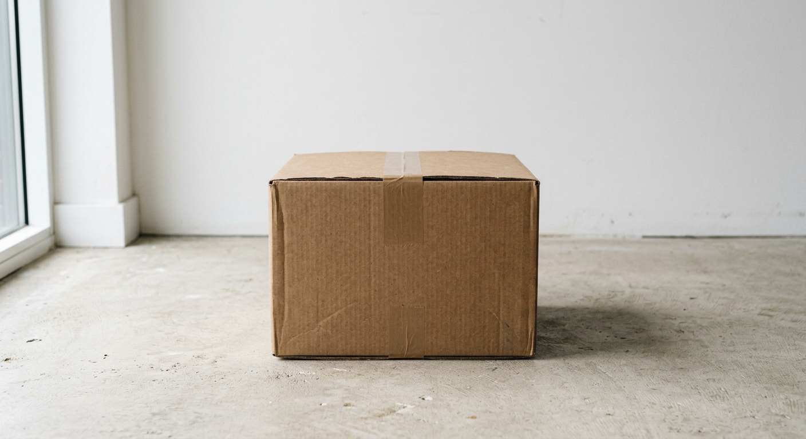

A Syne Extra Bold with Instrument Serif Italic
Wide, modern, a little unusual
Knitwear manufacturing · Egypt
Soft to the hand. Held to a standard.
Cut, sewn, printed and packed under one roof in 10th of Ramadan City.
16active lines33 at full capacity
20,000minimum per style10,000 for a trial
9certificates heldWRAP, Sedex, ISO, GOTS, GRS
 The floor
The floor The wardrobe
The wardrobe
Every stone in placeSilk is the garment.
The product is soft, finished and easy to handle. Made in your weight, your fibre and your fit, to the tech pack you send us.
Stone is the factory.
The operation behind it is fixed, measured and does not move. Every roll, lay, line and carton is recorded against the order.
Request a quote